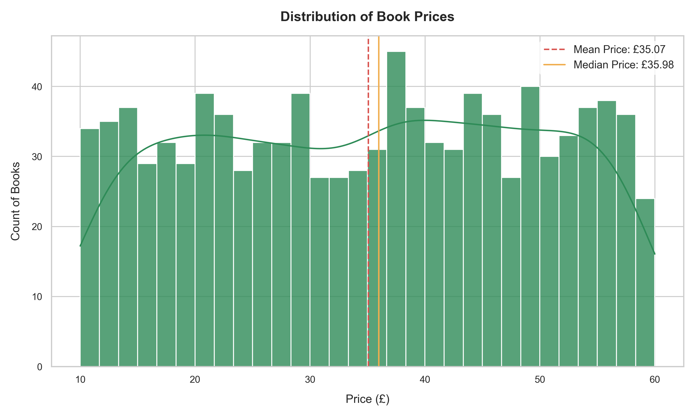
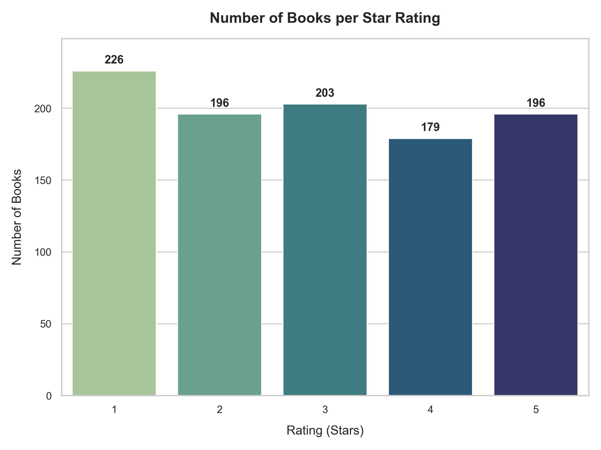
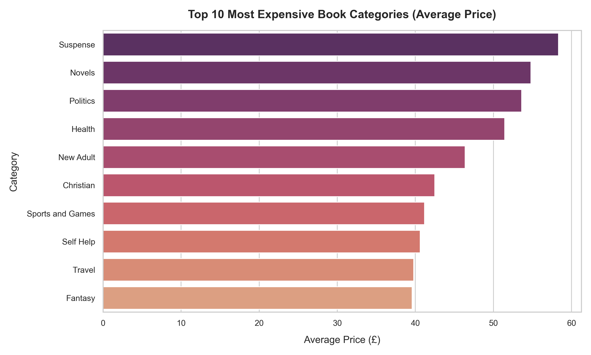
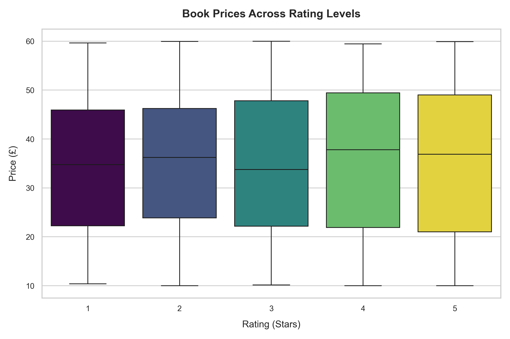

CodeAlpha Data Analytics Internship Portfolio - Interactive Deliverable

This histogram with a Kernel Density Estimate (KDE) line shows how book prices are spread across the bookstore inventory. The vertical lines represent the average price (red dashed line) and median price (orange solid line).

This bar plot lists the frequency of books per star-rating category from 1 to 5. It reveals the volume of customer reviews across the platform.

This horizontal bar chart highlights the top 10 most expensive genres by average retail price.

This box-and-whisker plot compares price ranges across different ratings. The boxes show the IQR (Interquartile Range) and the horizontal line shows the median price.